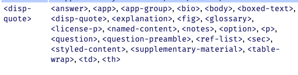
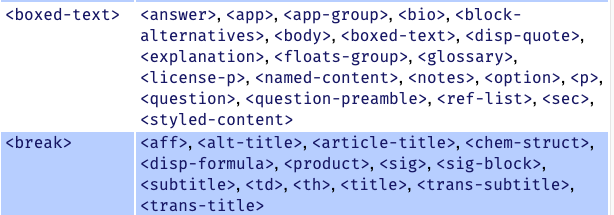
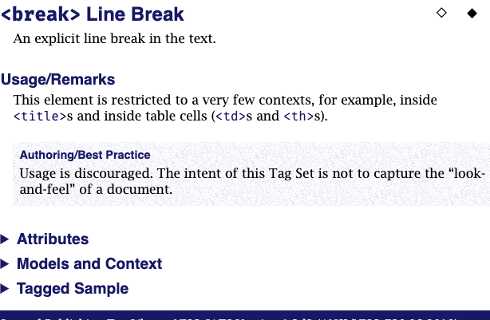

There are two subsections within this section:
Provides pointers from both preferred terms (such as element and attribute names) and non-preferred terms (such as synonyms of common JATS elements, such as “author” “See <contrib>” for terms used throughout the Tag Library.
A consolidated alphabetical of the context information that appears on each element page. The table provides a listing of where each element may be used, that is, all the contexts in which this element may occur.
Index — The index includes tag names, element names, attribute names, parameter entity names, elements from other vocabularies that may be familiar to JATS users, and synonyms to many JATS element name.
Figure 20. How do I tag the article author in JATS?
Figure 21. Why doesn‘t JATS have a “quote” element?
Element Context Table — The Context Table describes where each JATS element may be used. The table is formatted in two columns:
(“This Element”) names an element
(“May Be Contained In”) contains an alphabetical list of all the elements in which the element named in the first column element may occur.
The letters of the alphabet in the NAVBAR and at the top of each page are links directly to the elements which start with that letter.
Figure 22. Context Table entry for <disp-quote>
|  |
Figure 23. Context Table entry for <boxed-text> and <break>
|  |
Now that seems odd, why is <break> allowed in so few places? If we look at the element page for <break> we find out, as part of the Best Practice information:
Figure 24. Element Page entry for <break>
|  |